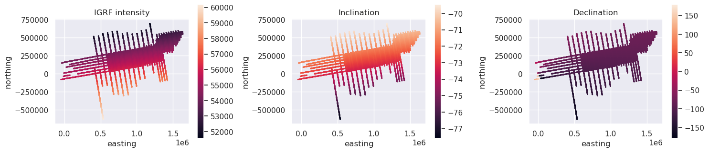
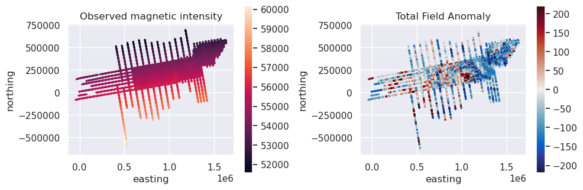

IGRF Correction#
Removing the International Geomagnetic Reference Field (IGRF) from magnetic survey data is a critical part of the processing workflow. Here we demonstrate how to do this in ‘airborengeo’, utilizing some code from the Python package ‘Harmonica’.
[1]:
# %load_ext autoreload
# %autoreload 2
import cmocean
import matplotlib.pyplot as plt
import pandas as pd
import verde as vd
import airbornegeo
Load data#
This is a subset of the BAS AGAP survey over Antarctica’s Gamburtsev Subglacial Mountains. The file is download and subset in the notebook AGAP_magnetic_survey.
[2]:
data_df = pd.read_csv("data/AGAP_magnetic_survey.csv")
# only retain the columns we need
data_df = data_df[
[
"Lon",
"Lat",
"easting",
"northing",
"Height_WGS1984",
"Date",
"Time",
"unixtime",
"line",
"MagR",
"RefField",
]
]
data_df = data_df.sort_values(["line", "unixtime"])
# keep only every 20 row to speed up plotting
data_df = data_df[::20]
data_df
[2]:
| Lon | Lat | easting | northing | Height_WGS1984 | Date | Time | unixtime | line | MagR | RefField | |
|---|---|---|---|---|---|---|---|---|---|---|---|
| 0 | 75.635600 | -84.104393 | 6.210722e+05 | 159052.962392 | 4109.4 | 2008-12-17 | 0 days 07:53:42 | 1.229500e+09 | 1 | 55143.17 | 55133.06 |
| 20 | 75.645801 | -84.094070 | 6.221899e+05 | 159221.159183 | 4134.0 | 2008-12-17 | 0 days 07:54:03 | 1.229500e+09 | 1 | 55127.58 | 55132.63 |
| 40 | 75.653676 | -84.083888 | 6.232863e+05 | 159410.463641 | 4135.4 | 2008-12-17 | 0 days 07:54:23 | 1.229500e+09 | 1 | 55115.74 | 55132.61 |
| 60 | 75.662205 | -84.073454 | 6.244112e+05 | 159599.143002 | 4133.4 | 2008-12-17 | 0 days 07:54:43 | 1.229500e+09 | 1 | 55108.25 | 55132.70 |
| 80 | 75.671227 | -84.062810 | 6.255597e+05 | 159787.772567 | 4151.4 | 2008-12-17 | 0 days 07:55:03 | 1.229501e+09 | 1 | 55103.03 | 55132.38 |
| ... | ... | ... | ... | ... | ... | ... | ... | ... | ... | ... | ... |
| 1060300 | 84.295793 | -80.008286 | 1.082884e+06 | 108166.469739 | 4191.2 | 2009-01-06 | 0 days 13:38:38.440000 | 1.231249e+09 | 206 | 55992.37 | 56050.06 |
| 1060320 | 84.216115 | -80.009295 | 1.082622e+06 | 109661.140637 | 4191.1 | 2009-01-06 | 0 days 13:38:58.440000 | 1.231249e+09 | 206 | 55969.54 | 56038.73 |
| 1060340 | 84.136530 | -80.010339 | 1.082355e+06 | 111153.145716 | 4190.2 | 2009-01-06 | 0 days 13:39:18.440000 | 1.231249e+09 | 206 | 55942.08 | 56027.43 |
| 1060360 | 84.056840 | -80.011228 | 1.082103e+06 | 112648.360155 | 4191.6 | 2009-01-06 | 0 days 13:39:38.440000 | 1.231249e+09 | 206 | 55907.00 | 56016.03 |
| 1060380 | 84.037875 | -80.011449 | 1.082042e+06 | 113004.019427 | 4193.4 | 2009-01-06 | 0 days 13:39:58.440000 | 1.231249e+09 | 206 | 55875.31 | 56004.53 |
53020 rows × 11 columns
IGRF for a single data#
For short durations surveys (hours or days) it is reasonable to calculate the IGRF model at a single time, since secular variations are typically small for these timescales. Below we will use date of the first row to compute the IGRF field for the entire survey.
[3]:
# make a datetime column
data_df["datetime"] = data_df.Date + " " + data_df.Time.str.split("days ").str.get(1)
data_df.head()
[3]:
| Lon | Lat | easting | northing | Height_WGS1984 | Date | Time | unixtime | line | MagR | RefField | datetime | |
|---|---|---|---|---|---|---|---|---|---|---|---|---|
| 0 | 75.635600 | -84.104393 | 621072.177354 | 159052.962392 | 4109.4 | 2008-12-17 | 0 days 07:53:42 | 1.229500e+09 | 1 | 55143.17 | 55133.06 | 2008-12-17 07:53:42 |
| 20 | 75.645801 | -84.094070 | 622189.859392 | 159221.159183 | 4134.0 | 2008-12-17 | 0 days 07:54:03 | 1.229500e+09 | 1 | 55127.58 | 55132.63 | 2008-12-17 07:54:03 |
| 40 | 75.653676 | -84.083888 | 623286.279285 | 159410.463641 | 4135.4 | 2008-12-17 | 0 days 07:54:23 | 1.229500e+09 | 1 | 55115.74 | 55132.61 | 2008-12-17 07:54:23 |
| 60 | 75.662205 | -84.073454 | 624411.189918 | 159599.143002 | 4133.4 | 2008-12-17 | 0 days 07:54:43 | 1.229500e+09 | 1 | 55108.25 | 55132.70 | 2008-12-17 07:54:43 |
| 80 | 75.671227 | -84.062810 | 625559.719601 | 159787.772567 | 4151.4 | 2008-12-17 | 0 days 07:55:03 | 1.229501e+09 | 1 | 55103.03 | 55132.38 | 2008-12-17 07:55:03 |
[ ]:
# Construct Survey with geographic and temporal columns
# No line_column yet — split_into_segments will create segments_by_time below
# Use copy=False so survey.data and data_df remain synchronized
survey = airbornegeo.Survey(
data_df,
datetime_column="datetime",
latitude_column="Lat",
longitude_column="Lon",
height_column="Height_WGS1984",
copy=False,
)
survey
[4]:
intensity, inc, dec = airbornegeo.igrf(
data_df,
datetime_column="datetime",
latitude_column="Lat",
longitude_column="Lon",
height_column="Height_WGS1984",
)
data_df["IGRF_intensity_1datetime"] = intensity
data_df["IGRF_inc"] = inc
data_df["IGRF_dec"] = dec
data_df.head()
[4]:
| Lon | Lat | easting | northing | Height_WGS1984 | Date | Time | unixtime | line | MagR | RefField | datetime | IGRF_intensity_1datetime | IGRF_inc | IGRF_dec | |
|---|---|---|---|---|---|---|---|---|---|---|---|---|---|---|---|
| 0 | 75.635600 | -84.104393 | 621072.177354 | 159052.962392 | 4109.4 | 2008-12-17 | 0 days 07:53:42 | 1.229500e+09 | 1 | 55143.17 | 55133.06 | 2008-12-17 07:53:42 | 55085.052201 | -72.438106 | -95.445248 |
| 20 | 75.645801 | -84.094070 | 622189.859392 | 159221.159183 | 4134.0 | 2008-12-17 | 0 days 07:54:03 | 1.229500e+09 | 1 | 55127.58 | 55132.63 | 2008-12-17 07:54:03 | 55084.689233 | -72.438409 | -95.441030 |
| 40 | 75.653676 | -84.083888 | 623286.279285 | 159410.463641 | 4135.4 | 2008-12-17 | 0 days 07:54:23 | 1.229500e+09 | 1 | 55115.74 | 55132.61 | 2008-12-17 07:54:23 | 55084.750247 | -72.438458 | -95.434496 |
| 60 | 75.662205 | -84.073454 | 624411.189918 | 159599.143002 | 4133.4 | 2008-12-17 | 0 days 07:54:43 | 1.229500e+09 | 1 | 55108.25 | 55132.70 | 2008-12-17 07:54:43 | 55084.943474 | -72.438532 | -95.428265 |
| 80 | 75.671227 | -84.062810 | 625559.719601 | 159787.772567 | 4151.4 | 2008-12-17 | 0 days 07:55:03 | 1.229501e+09 | 1 | 55103.03 | 55132.38 | 2008-12-17 07:55:03 | 55084.642334 | -72.438708 | -95.422346 |
[5]:
fig, axs = plt.subplots(1, 3, figsize=(15, 6))
ax = data_df.plot.scatter(
"easting",
"northing",
c="IGRF_intensity_1datetime",
s=1,
ax=axs[0],
colorbar=False,
title="IGRF intensity",
)
ax.set_aspect("equal")
plt.colorbar(ax.collections[0], ax=ax, shrink=0.5)
ax = data_df.plot.scatter(
"easting",
"northing",
c="IGRF_inc",
s=1,
ax=axs[1],
colorbar=False,
title="Inclination",
)
ax.set_aspect("equal")
plt.colorbar(ax.collections[0], ax=ax, shrink=0.5)
ax = data_df.plot.scatter(
"easting",
"northing",
c="IGRF_dec",
s=1,
ax=axs[2],
colorbar=False,
title="Declination",
)
ax.set_aspect("equal")
plt.colorbar(ax.collections[0], ax=ax, shrink=0.5)
plt.tight_layout()
plt.show()
IGRF for each flight#
If our survey spans more than a few days, or high accuracy is required, we can compute the IGRF field at multiple timesteps, for example, for each day, flight, or line.
For this survey, we don’t have flight ID’s, so we will split the survey on gaps in time larger than six hours, and calculate the IGRF individually for each of these segments.
[ ]:
survey.split_into_segments(
threshold=60 * 60 * 60 * 6, # 6 hrs
column_name="unixtime",
result_column="segments_by_time",
)
# Now bind line_column to the created segments_by_time column
survey.line_column = "segments_by_time"
print(f"Number of segments: {len(survey.data.segments_by_time.unique())}")
ax = survey.data.plot.scatter(
"easting",
"northing",
c="segments_by_time",
s=0.2,
cmap="rainbow",
)
ax.set_aspect("equal")
[ ]:
survey.igrf(datetime_column="datetime")
# Result columns are auto-written: igrf_intensity, igrf_inclination, igrf_declination
survey.data.head()
[8]:
fig, axs = plt.subplots(1, 3, figsize=(15, 6))
ax = data_df.plot.scatter(
"easting",
"northing",
c="IGRF_intensity",
s=1,
ax=axs[0],
colorbar=False,
title="IGRF intensity",
)
ax.set_aspect("equal")
plt.colorbar(ax.collections[0], ax=ax, shrink=0.5)
ax = data_df.plot.scatter(
"easting",
"northing",
c="IGRF_inc",
s=1,
ax=axs[1],
colorbar=False,
title="Inclination",
)
ax.set_aspect("equal")
plt.colorbar(ax.collections[0], ax=ax, shrink=0.5)
ax = data_df.plot.scatter(
"easting",
"northing",
c="IGRF_dec",
s=1,
ax=axs[2],
colorbar=False,
title="Declination",
)
ax.set_aspect("equal")
plt.colorbar(ax.collections[0], ax=ax, shrink=0.5)
plt.tight_layout()
plt.show()

[ ]:
# compare the intenties using only 1 datetime and multiple
data_df["dif"] = data_df.IGRF_intensity_1datetime - data_df.IGRF_intensity
maxabs = vd.maxabs(data_df.dif, percentile=100)
survey.plot(
color_by="dif",
cmap=cmocean.cm.balance,
vmin=-maxabs,
vmax=maxabs,
s=0.2,
title="Difference between using single vs several datetimes",
)
Calculate total field anomalies#
We can now subtract the IGRF intensities from the observations to get a total field anomaly.
[10]:
data_df["total_field_anomaly"] = data_df.MagR - data_df.IGRF_intensity
data_df.head()
[10]:
| Lon | Lat | easting | northing | Height_WGS1984 | Date | Time | unixtime | line | MagR | RefField | datetime | IGRF_intensity_1datetime | IGRF_inc | IGRF_dec | segments_by_time | IGRF_intensity | dif | total_field_anomaly | |
|---|---|---|---|---|---|---|---|---|---|---|---|---|---|---|---|---|---|---|---|
| 0 | 75.635600 | -84.104393 | 621072.177354 | 159052.962392 | 4109.4 | 2008-12-17 | 0 days 07:53:42 | 1.229500e+09 | 1 | 55143.17 | 55133.06 | 2008-12-17 07:53:42 | 55085.052201 | -72.438106 | -95.445248 | 0 | 55085.052201 | 0.0 | 58.117799 |
| 20 | 75.645801 | -84.094070 | 622189.859392 | 159221.159183 | 4134.0 | 2008-12-17 | 0 days 07:54:03 | 1.229500e+09 | 1 | 55127.58 | 55132.63 | 2008-12-17 07:54:03 | 55084.689233 | -72.438409 | -95.441030 | 0 | 55084.689233 | 0.0 | 42.890767 |
| 40 | 75.653676 | -84.083888 | 623286.279285 | 159410.463641 | 4135.4 | 2008-12-17 | 0 days 07:54:23 | 1.229500e+09 | 1 | 55115.74 | 55132.61 | 2008-12-17 07:54:23 | 55084.750247 | -72.438458 | -95.434496 | 0 | 55084.750247 | 0.0 | 30.989753 |
| 60 | 75.662205 | -84.073454 | 624411.189918 | 159599.143002 | 4133.4 | 2008-12-17 | 0 days 07:54:43 | 1.229500e+09 | 1 | 55108.25 | 55132.70 | 2008-12-17 07:54:43 | 55084.943474 | -72.438532 | -95.428265 | 0 | 55084.943474 | 0.0 | 23.306526 |
| 80 | 75.671227 | -84.062810 | 625559.719601 | 159787.772567 | 4151.4 | 2008-12-17 | 0 days 07:55:03 | 1.229501e+09 | 1 | 55103.03 | 55132.38 | 2008-12-17 07:55:03 | 55084.642334 | -72.438708 | -95.422346 | 0 | 55084.642334 | 0.0 | 18.387666 |
[11]:
fig, axs = plt.subplots(1, 2, figsize=(10, 6))
ax = data_df.plot.scatter(
"easting",
"northing",
c="MagR",
s=1,
ax=axs[0],
colorbar=False,
title="Observed magnetic intensity",
)
ax.set_aspect("equal")
plt.colorbar(ax.collections[0], ax=ax, shrink=0.5)
maxabs = vd.maxabs(data_df.total_field_anomaly, percentile=95)
ax = data_df.plot.scatter(
"easting",
"northing",
c="total_field_anomaly",
s=1,
cmap=cmocean.cm.balance,
vmin=-maxabs,
vmax=maxabs,
ax=axs[1],
colorbar=False,
title="Total Field Anomaly",
)
ax.set_aspect("equal")
plt.colorbar(ax.collections[0], ax=ax, shrink=0.5)
plt.tight_layout()
plt.show()

Compare with the IGRF values in the published dataset#
[ ]:
# compare to the IGRF values used in the published dataset
data_df["dif"] = data_df.RefField - data_df.IGRF_intensity
maxabs = vd.maxabs(data_df.dif, percentile=99)
survey.plot(
color_by="dif",
cmap=cmocean.cm.balance,
vmin=-maxabs,
vmax=maxabs,
s=0.2,
title="Difference to published dataset's IGRF values",
)
[ ]: